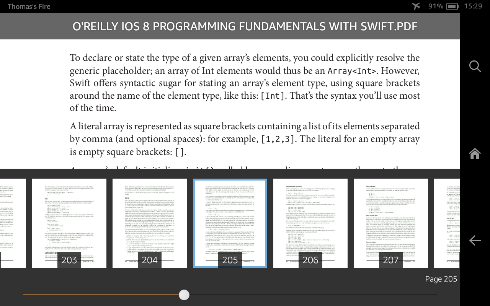
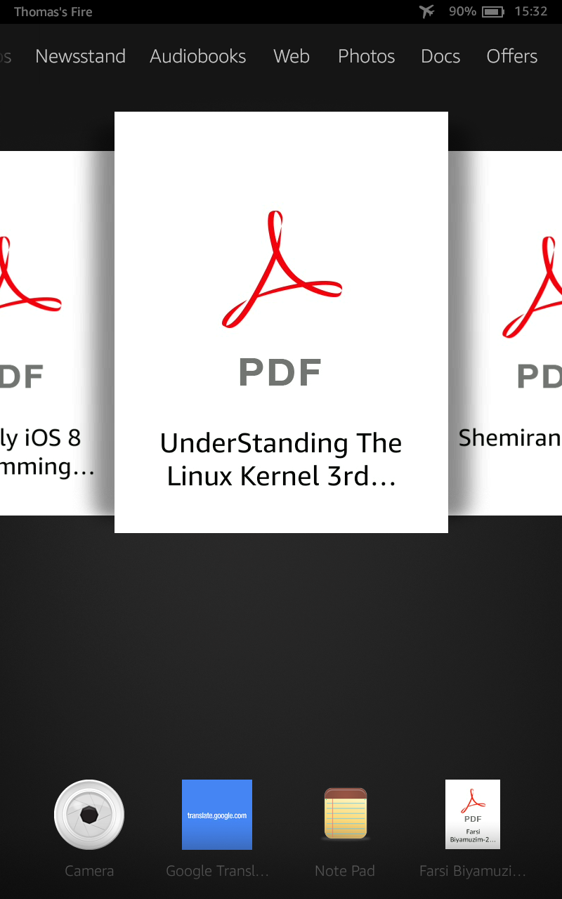

I bought a Kindle Fire HD 7 for around £50 during Amazon’s recent ‘Prime Day’ sale.
It’s now been supplanted by Amazon’s low-cost Fire offering, which seems to be largely the same device (albeit with a slightly lower resolution), so most of this post probably holds true for that device too.
Why?
The device was supposed to be a half-way point between my Kindle and laptop - something portable that would allow me to read PDFs of things that don’t convert well to e-book format (Programming book / books in Farsi / anything that’s been badly scanned), without the distractions of something that’s connected to the internet and full of other distractions.
And?
So far, things have worked out surprisingly well. I’ve managed to resist the temptation to install any apps on there or to use the web browser much. Keeping it permanently in Aeroplane mode has meant that there’s just enough overhead to doing something online that I’ll switch to my laptop if needed.
The built-in PDF reader is basic but works well for my needs (reading a book one page at a time, cover-to-cover). It allows skipping to different page numbers, but no e.g table-of-contents functionality:

I’ve been loading documents on via USB, being on OSX means that I have to use the Android file transfer app (rather than the tablet presenting itself as a block USB device), which is mildy annoying but not too much of a pain. It also seems to be very fussy about where things are placed - everything needs to go in documents/ and trying to organise books via subfolders (e.g documents/computing/) causes them to be ignored.
One minor-but-actually-quite-annoying thing is that PDF covers aren’t picked up for side-loaded documents, meaning that my UI has ended up being full of default covers (see below). This seems to have been an issue since 2011 and seems like a weird one to not have fixed. The only reason I can think of is that Amazon really don’t expect/want the device to be used in this way - Fire OS seems very much to be designed as a slick content consumption experience, provided that you buy in fully to the Amazon ecosystem (Prime Video, Photo Storage etc.):

Battery life has been better than I expected - I haven’t done any scientific testing, but I generally get a few days of solid reading (3-4 hours per day) before I need to dig out the charger. It also charges very quickly, but needs the provided charger (all of my other microUSB chargers were deemed to be too low-power by it).
Anecdotally, I finding it less straining on my eyes than my laptop, but more so than my Kindle (which is what I’d expect). Combined with the lack of other distractions on there, this makes it usually possible to read on there at night without affecting my ability to go to sleep.
TL;DR?
Overall, I’d definitely recommend the Fire HD 7 (or the new Fire tablet) with the caveat that I’m recommending it for my exact use case. For less than £50, I’ve been able to do a lot more distraction-free reading that I would have on my laptop.